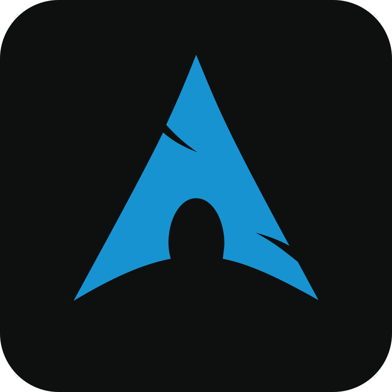
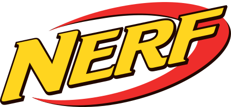
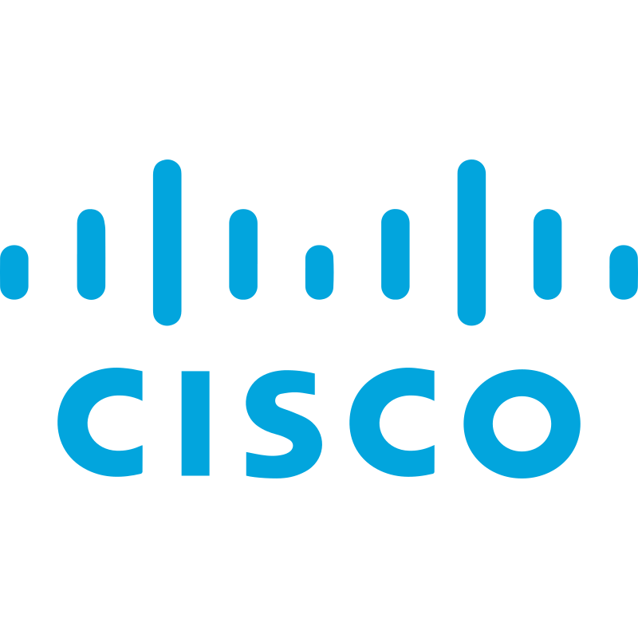

Me and Linux ❤️
My Linux journey began three years ago, and I've been a dedicated user ever since. Rather than dual-booting, I've opted for virtual machines and emulation (wine), which has proven to be an incredibly smooth transition. Despite some initial challenges with Linux Mint in my early days, I quickly discovered that moving from Windows to Linux is not only doable but made computers fun and not frustrating.
The world of Linux has been nothing short of transformative. The level of customization is truly remarkable, and the Free and Open Source Software (FOSS) ecosystem has consistently impressed me. Still finding new robust alternatives to expensive proprietary software (looking at you adobe!).
During my first year of college, I started with Linux Mint and the Cinnamon desktop environment, using it for schoolwork, browsing, and light gaming. As my interest in technology deepened, I found myself immersed in Linux forums, blogs, and YouTube content. The emerging Wayland protocol (a replacement of the Xorg display server) caught my attention, sparking my curiosity about more technical distributions.
Arch Linux became my next adventure. Its comprehensive documentation, bleeding-edge AUR packages, and developer-friendly tooling made it the perfect fit. I embraced Hyprland as my window manager and hoping on the Wayland train, falling in love with its smooth animations and glossy aesthetic (reminded me of Windows 7). Not to mention the new gained online street cred (I use arch btw!).
My Linux exploration continues. I'm currently eyeing potential next steps: experimenting with alternative init systems distros like Artix or Void, and exploring NixOS for its high-replication design (amazing for servers). Each distribution brings new learning opportunities and challenges.
Three years into my Linux journey, I can confidently say it's been an exhilarating ride. While I do get lazy with documentation at times, my GitHub will soon showcase more of my Linux-related projects. Stay tuned—if I can motivate myself to write those forsaken README files lmao.
Other Hobbies 😎
When I'm not diving deep into the world of Linux, I enjoy exploring a variety of other hobbies. Whether it's tinkering, watching movies, or playing video games,
I found that having side hobbies is best, just to avoid on getting bored on your main hobby. Here are a few things I like doing:
-

Nerf Gun Modding:
Recently, I developed a keen interest in electronics modification, with a particular focus on Nerf guns. This hobby involved intricate customization techniques, including painting, 3D-printed accessory kits, and bypassing safety mechanism to make the nerf gun more accurate and hit harder. Through these projects, I acquired intermediate soldering skills and developed a passion for tinkering. Recently, this interest has expanded to exploring Arduino-based gadget creation and potentially delving into embedded programming and robotics. -
Movies:
I have a strong appreciation for science fiction and dystopian war films. My favorite sci-fi movies currently are "Children of Men," "The Matrix," and "Alien," alongside intense war movies/tv like "Apocalypse Now," "Band of Brothers," and "Zero Dark Thirty." These films offer compelling explorations of human resilience, pottential future technologes or threats, for some reason these stories made me think and peaked my interest the most. -
Gaming:
I occasionally do some very light gaming, I've been playing shooters most of the time when I feel like playing games like DOOM and CSGO. But, now I've gotten more into ROM Hacking and playing emulated nintendo games like Pokemon and Kirby on my laptop when I'm bored.
My Top Skills

Some of my Recent Projects
Linux Homelab
My Linux homelab is a self-hosting environment where I run various services and applications on Linux-based servers. It's a space for experimenting with open-source software, automation, and system administration skills.
Check it OutHoneypot
I've set up a vulnerable server exposed to the public internet to observe and analyze the tools and tactics attackers are using in real-time. This helps in understanding current threats and improving security measures.
Check it OutWindows Homelab
I’ve created a cloud-based homelab using Microsoft Azure to explore cloud technologies. This setup allows me to experiment with virtual machines, cloud services, and infrastructure management in a flexible and scalable environment.
Check it Out